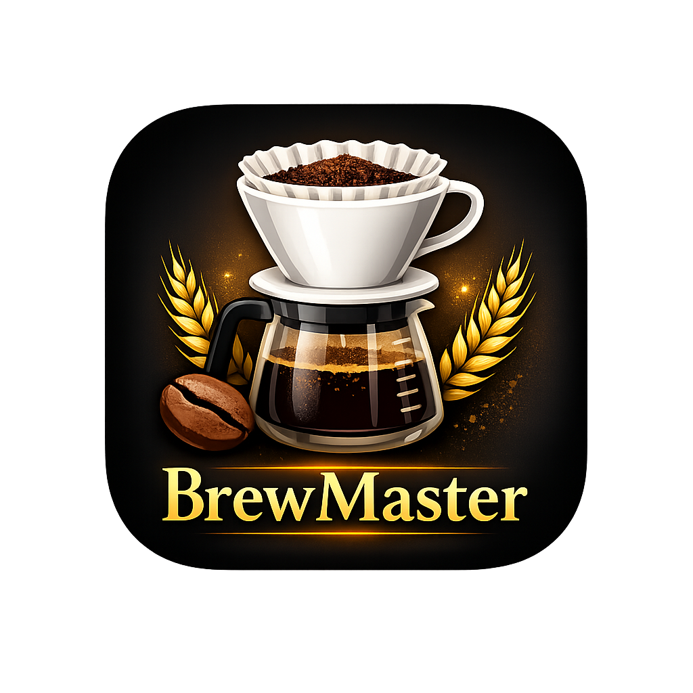
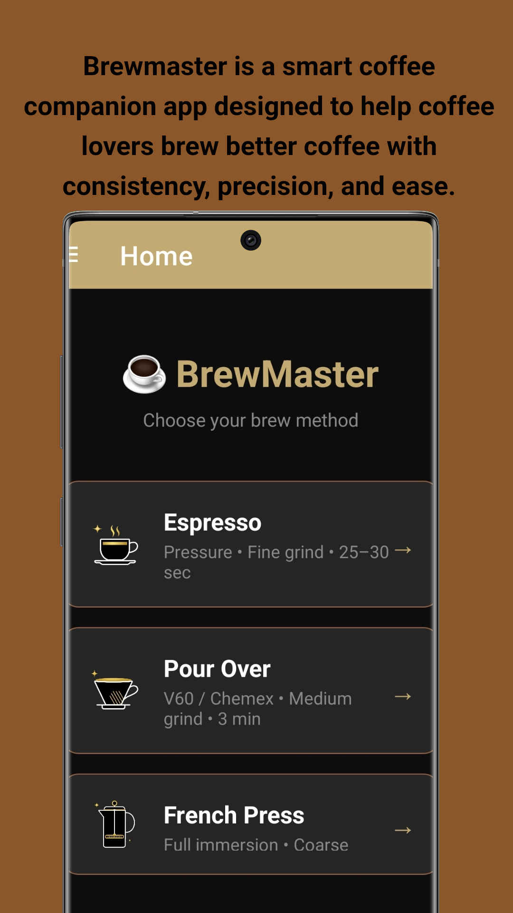
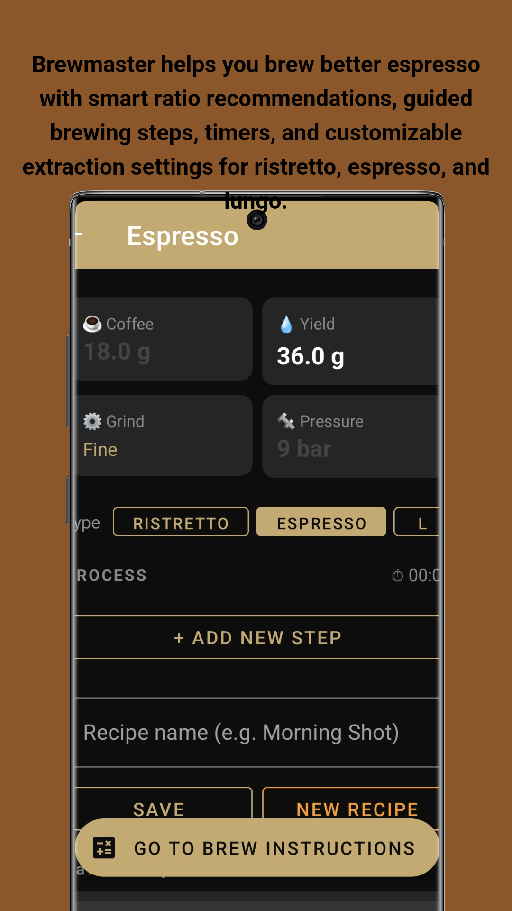
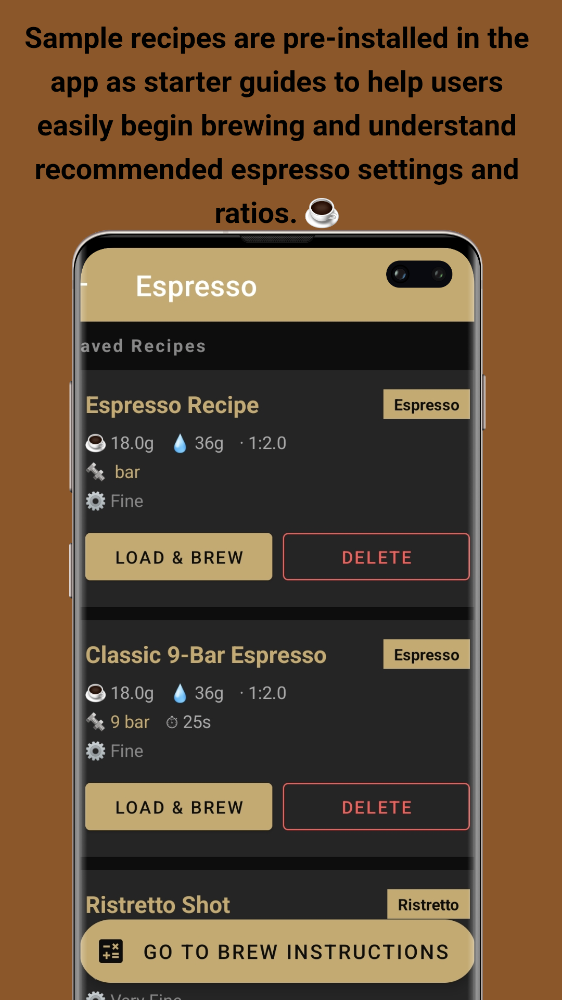
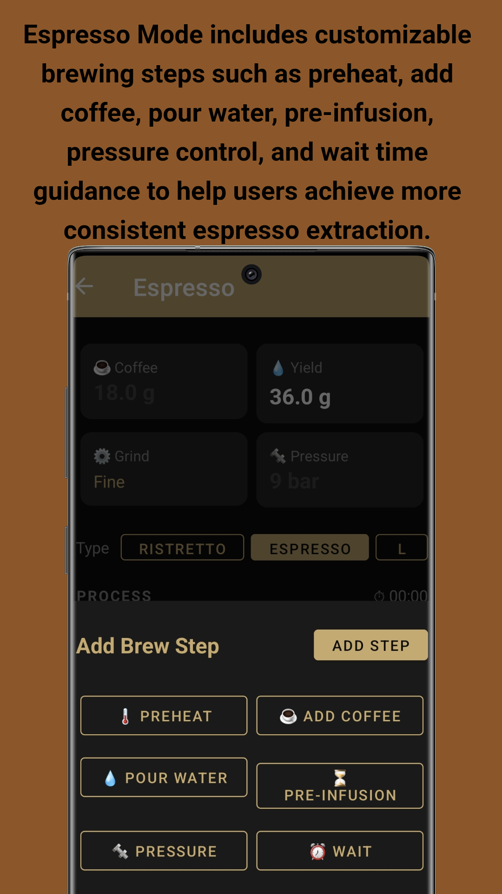
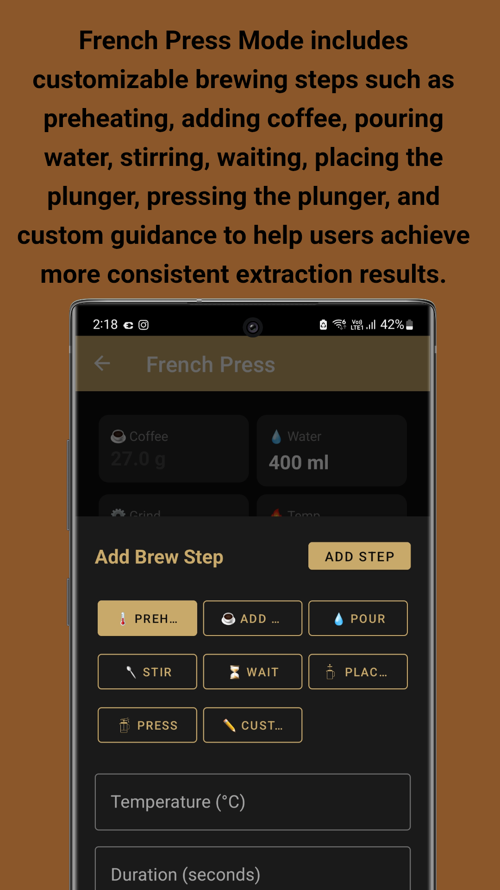
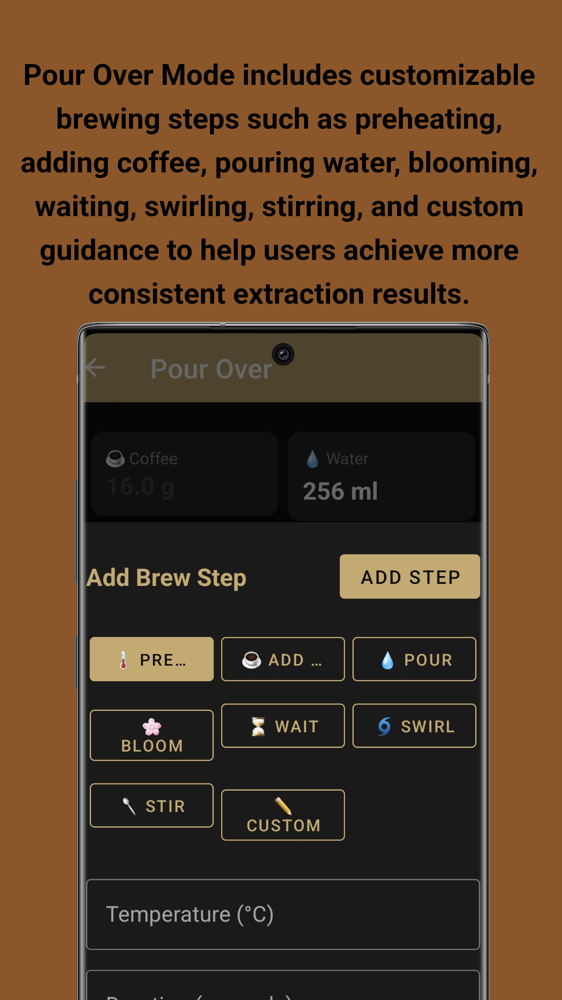
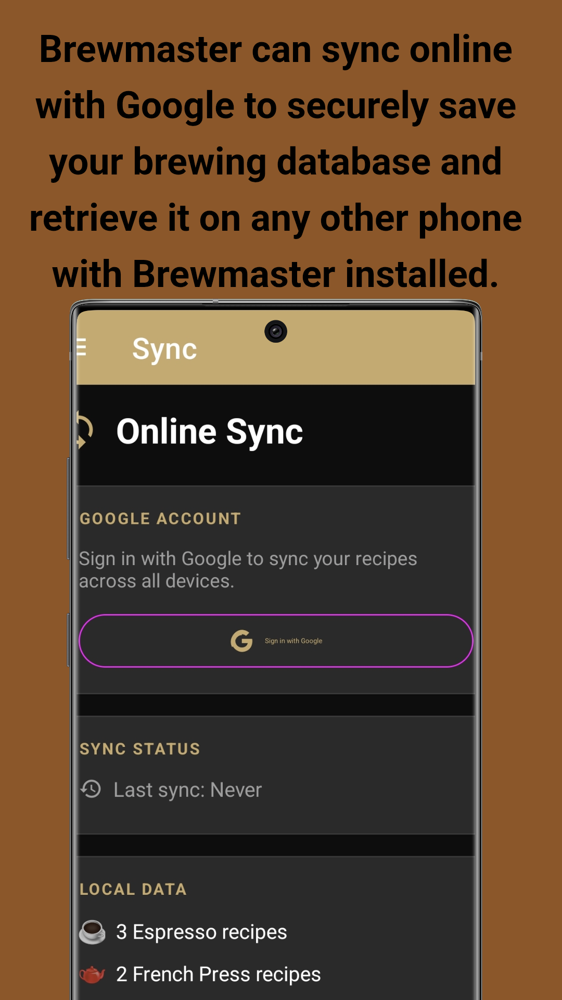
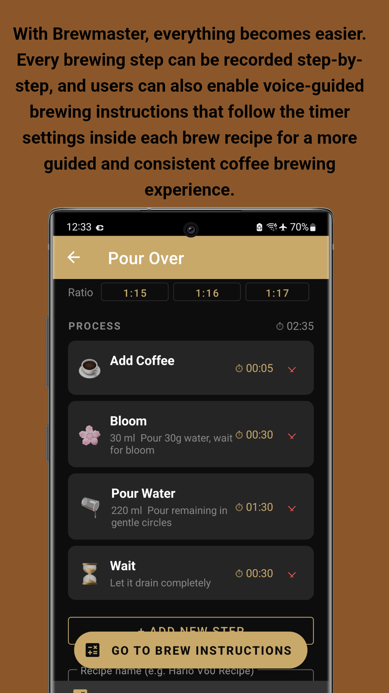

Your personal coffee brewing companion. Craft the perfect cup every time with guided recipes, smart timers, and expert brewing tips.
Everything you need to brew coffee with confidence, consistency, and precision
Choose from Espresso (Ristretto, Espresso, Lungo), Pour Over (V60 / Chemex), and French Press. Each method has dedicated parameters and step types tailored to the brewing style.
Build your own step-by-step brew recipes with customizable steps: Preheat, Add Coffee, Pour Water, Bloom, Stir, Swirl, Wait, Pre-Infusion, and Pressure. Save and name your recipes for easy access.
Follow your recipe in real-time with a live countdown timer and voice-guided instructions for each step. Never miss a beat during your brew — the app tells you exactly what to do and when.
Save your grinder model and click settings for every brew method — Espresso, Ristretto, Lungo, Pour Over, and French Press. Replicate your perfect grind every time without guessing.
Learn coffee fundamentals with articles covering grind size, extraction, water temperature, ratios, and brewing techniques. Track your progress with an XP system as you advance from Basic to Advanced topics.
Describe your taste problem — too bitter, too sour, too weak, or flat — and get instant actionable recommendations to improve your next cup. AI-powered troubleshooting for better coffee.
Sign in with your Google account to sync all your recipes across multiple devices. Your recipes are always backed up and available everywhere. Enable auto-sync on launch for seamless backup.
Get started immediately with sample recipes included as starter guides. Learn recommended espresso settings, ratios, and brewing steps without starting from scratch.
Key advantages for home baristas and coffee professionals
Weigh your coffee, set exact water temperatures, and follow timed steps. BrewMaster removes the guesswork so you can replicate your perfect cup every single morning.
Every parameter is adjustable — coffee weight, water amount, grind size, pressure, temperature, and ratio. Create recipes that match your exact taste preferences and equipment.
Focus on your technique while the app speaks instructions aloud. Perfect for when your hands are busy with the portafilter or pour-over kettle. Voice guidance follows your timer settings.
Switch phones without losing your recipes. Sign in with Google and all your custom recipes, grinder settings, and progress transfer instantly to your new device.
The Education section teaches you the science behind each parameter. Understand why grind size affects extraction, how temperature changes flavor, and what ratios mean for strength.
Developed by John Irianto Susanto. The app is available on GitHub for transparency. Clean interface with no unnecessary bloatware — just pure coffee brewing focus.
See the app in action — elegant interface, powerful brewing tools








Screenshots taken on Samsung Galaxy S23 Ultra
Step-by-step instructions to brew your perfect cup
Download BrewMaster from Google Play Store or GitHub. Install and open the app. The app uses a bottom navigation bar with 5 tabs:
On the Home screen, tap one of three brew method cards:
Tip: Each brew method has its own recipe storage. Espresso recipes won't appear in Pour Over.
Configure your brew parameters:
Tap + ADD NEW STEP to build your process. Available steps include: Preheat, Add Coffee, Pour Water, Bloom, Stir, Swirl, Wait, Pre-Infusion, and Pressure.
Save your perfect recipe for future use:
Tap GO TO BREW INSTRUCTIONS to start guided brewing:
Note: The first step shows "Get Ready..." to give you time to prepare equipment.
Complete your BrewMaster experience:
Available for free on Google Play Store and GitHub. Start your journey to the perfect cup today.
Developed by John Irianto Susanto